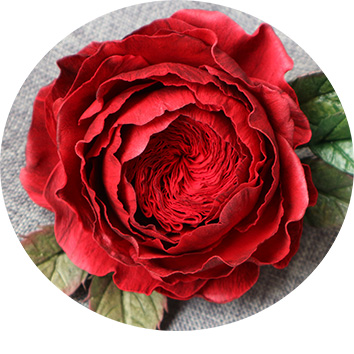

WELCOME TO
THE WONDERFUL WORLD OF FLOWERS
Handmade flowers are a great gift for Valentine's day, Mother's day, or any occasion when you want to make something special for a friend or loved one. Unlike real flowers, make something that lasts! This collection features flowers made from foamiran.
